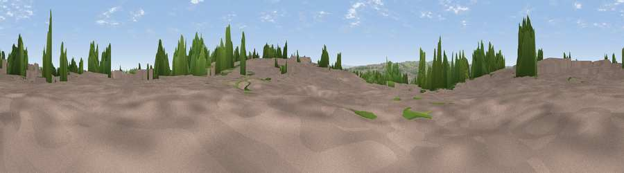

Viewpoint near Bradford
#37658 in England · top 77% of its area beats it · near BradfordWhere it is
The exact computed spot (SE 17775 34975). Click the marker for map links.
The view, rendered

A 360° render of this exact spot computed from the terrain model, tree cover and land cover — summer colours, afternoon light, calibrated against photographs of famous viewpoints. Real trees, hedges and buildings will differ in detail.
The panorama
Grey silhouette: terrain skyline in each direction (720 bearings, Earth curvature and refraction included). Dashed green: skyline with trees (+15 m) and buildings (+8 m) as obstacles. Blue strip: how far the ground is visible on each bearing.
Where the view opens
Wedge length = distance to the farthest visible ground on that bearing (vegetation-aware). Rings at 10, 25 and 50 km.
What fills the view
50% built-up · 25% woodland · 24% grassland
Angular shares of the visible panorama (visual magnitude), not map area. Landscape diversity 0.46 (0–1 Shannon).
Key numbers
More beautiful places nearby
The staircase of upgrades: each row has a higher view potential than everything closer. Driving times are estimates from straight-line distance, calibrated against real road routing — check an actual route before setting out.
| Place | Direction | Drive | Score |
|---|---|---|---|
| Viewpoint near Bradford | SW · 1 km | ~3 min | 45.5 |
| Viewpoint near Calverley | ENE · 2 km | ~5 min | 50.7 |
| Viewpoint near Calverley | ENE · 2 km | ~6 min | 51.2 |
| Viewpoint near Wrose | NNW · 3 km | ~7 min | 66.5 |
| Viewpoint near Baildon | NW · 6 km | ~13 min | 70.4 |
| Rawdon Billing | NE · 6 km | ~13 min | 73.0 |
| Viewpoint near Otley | NNE · 10 km | ~19 min | 77.5 |
| Viewpoint near East Witton | N · 50 km | ~71 min | 77.8 |
53.81076, -1.73154 · source: screening · position refined by local search. Computed location — check access rights before visiting.